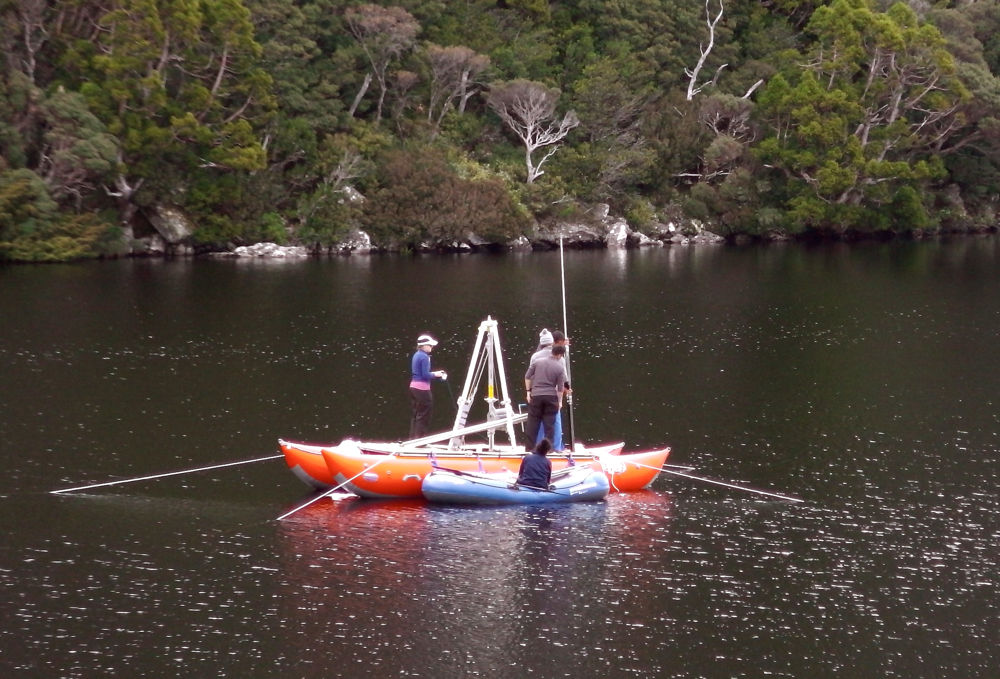

Welcome to Alexa Benson's Portfolio
Data Analyst well versed in SQL, Python and Tableau
@akbenson
Featured Post
Mapping 2016 crime density in San Francisco
In this project I plotted 2016 crime density in San Francisco based on location, using folium.
Portfolio Projects
Data exploration of Covid 19 data in SQL

Tableau dashboard with various projects

Movie correlation with Python

SQL Queries for Covid project in Tableau

Absenteeism in the Workplace Pt.1
Absenteeism in the Workplace Pt.2
About Me
I am educated in the field of geochemistry, using speleothems for past climate research. I enjoy working with data. I always try to expand my knowledge of analytics and visualisation tools such as pandas, scikit-learn, SQL and Tableau because I love learning and improving my skillset.
In a previous life, I conducted labwork in various university labs, primarily focusing on palaeoecological studies. This research was focused on using chemical methods to recover macro/microfossils from lake sediments to help reconstruct the ecological environment during the last 12.000 years (primarily in Australia and Oceania). My largest project consisted of a 13 metre sediment core from Tahiti, completed with the Australian National University with Dr Janelle Stevenson. However, my most prevalent work focused on various lake sediment cores collected throughout Tasmania with the University of Melbourne under the supervision of Dr Michael Fletcher. During my master's studies, I specialised in archaeometry, primarily Uranium-Thorium (U-Th) dating methods with Prof Dr Rainer Grun.
The experience gained from these projects allowed me to pursue my PhD at the Max Plank Institute for Evolutionary Anthropology with Dr Dirk Hoffmann and Prof Dr Jean-Jacques Hublin. There I was able to combine my past experience to reconstruct the past climate of western coastal Iberia, using speleothems, during a time when the Neanderthals were disappearing. We wanted to better understand if climate played a crucial role in Neanderthal extinction. The work required geochemical processing, as well as a comprehensive use of statistics, Microsoft Excel and R.
Throughout my PhD, my primary aim was to better understand my data, create clear visualisations and communicate my results to the broader community. I assumed that years of lab work and data processing meant that I was destined for academia, but during my PhD I realised that I simply love working with data, as well as visualising it. I like asking interesting questions and playing with data and creating a story from the results. What appeals most to me about working in industry is the relevance of the data and the fast-paced and international work atmosphere. Using my knowledge of statistics, SQL, python and Tableau, I can contribute to real-time, relevant change to/for a company. This is an opportunity that was never possible in my previous work, which I find exciting!
For more information about my work history and education, feel free to download my current CV for reference by clicking the button below. If you are curious to explore my previous publications, click here.